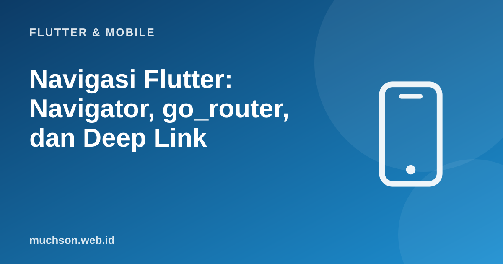

Beranda › Artikel › Flutter & Mobile
Flutter & MobileNavigasi Flutter: Navigator, go_router, dan Deep Link
Aplikasi nyata punya banyak layar: daftar, detail, keranjang, profil. Cara berpindah di antaranya memengaruhi tombol kembali, tautan yang dapat dibagikan, dan kemampuan membuka aplikasi langsung ke halaman tertentu dari notifikasi atau browser. Flutter menyediakan Navigator klasik dan, untuk kebutuhan yang lebih besar, routing deklaratif seperti go_router.
Sebaiknya sudah paham: widget Flutter, StatefulWidget

Setelah membaca dan mencoba materi ini, Anda mampu:
- memakai Navigator.push dan pop serta mengirim data antar layar
- memahami tumpukan navigasi (stack) dan hasil dari layar yang ditutup
- mendefinisikan rute dengan go_router, termasuk parameter path dan query
- melindungi rute dengan redirect (login)
- menjelaskan deep link dan cara kerjanya secara umum
Contoh Flutter ditampilkan sebagai kode yang mengikuti dokumentasi Flutter 3.x (Material 3, Dart 3). Bagian logika Dart murni dijalankan sungguhan dengan Dart SDK agar keluarannya dapat dibuktikan; kode yang butuh Flutter (widget) tidak dijalankan di halaman ini.
Tumpukan layar
Navigator dasar
// pindah ke layar baru
Navigator.push(
context,
MaterialPageRoute(builder: (_) => DetailProduk(produk: produk)), // data lewat konstruktor
);
// kembali
Navigator.pop(context);
// kembali SAMBIL membawa hasil
final hasil = await Navigator.push<bool>(context, MaterialPageRoute(builder: (_) => const KonfirmasiHapus()));
if (hasil == true && context.mounted) { /* hapus item */ }
// di KonfirmasiHapus: Navigator.pop(context, true);
// ganti layar tanpa bisa kembali (mis. setelah login)
Navigator.pushReplacement(context, MaterialPageRoute(builder: (_) => const Beranda()));
// rute bernama (sederhana)
MaterialApp(routes: {'/': (_) => const Beranda(), '/keranjang': (_) => const Keranjang()});
Navigator.pushNamed(context, '/keranjang');go_router: routing deklaratif
flutter pub add go_routerimport 'package:go_router/go_router.dart';
final router = GoRouter(
initialLocation: '/',
routes: [
GoRoute(
path: '/',
builder: (context, state) => const Beranda(),
routes: [
GoRoute(
path: 'produk/:id', // /produk/42
builder: (context, state) {
final id = int.parse(state.pathParameters['id']!);
return DetailProduk(id: id);
},
),
GoRoute(
path: 'cari', // /cari?q=kopi
builder: (context, state) => HalamanCari(kata: state.uri.queryParameters['q'] ?? ''),
),
],
),
GoRoute(path: '/masuk', builder: (context, state) => const Masuk()),
],
errorBuilder: (context, state) => const HalamanTidakDitemukan(),
);
void main() => runApp(MaterialApp.router(routerConfig: router));
// berpindah
context.go('/produk/42'); // ganti seluruh tumpukan sesuai alamat (seperti membuka URL)
context.push('/produk/42'); // tambah di atas tumpukan (dapat kembali)
context.pop();Cara kerja pencocokan rute (peragaan)
class Rute {
Rute(this.pola);
final String pola;
Map<String, String>? cocok(String alamat) {
final p = pola.split('/').where((s) => s.isNotEmpty).toList();
final a = Uri.parse(alamat).pathSegments.where((s) => s.isNotEmpty).toList();
if (p.length != a.length) return null;
final params = <String, String>{};
for (var i = 0; i < p.length; i++) {
if (p[i].startsWith(':')) { params[p[i].substring(1)] = a[i]; }
else if (p[i] != a[i]) { return null; }
}
return params;
}
}
void main() {
final daftar = [Rute('/'), Rute('/produk/:id'), Rute('/pengguna/:nama/pesanan/:no')];
for (final alamat in ['/', '/produk/42', '/pengguna/ani/pesanan/7?urut=baru', '/tidak/ada']) {
String hasil = '404 (errorBuilder)';
for (final r in daftar) {
final m = r.cocok(alamat);
if (m != null) { hasil = '${r.pola} $m'; break; }
}
print('${alamat.padRight(34)} -> $hasil');
}
}/ -> / {}
/produk/42 -> /produk/:id {id: 42}
/pengguna/ani/pesanan/7?urut=baru -> /pengguna/:nama/pesanan/:no {nama: ani, no: 7}
/tidak/ada -> 404 (errorBuilder)
Redirect: melindungi layar yang butuh login
final router = GoRouter(
refreshListenable: authNotifier, // router memeriksa ulang saat status login berubah
redirect: (context, state) {
final masuk = authNotifier.sudahMasuk;
final menujuLogin = state.matchedLocation == '/masuk';
if (!masuk && !menujuLogin) return '/masuk?dari=${Uri.encodeComponent(state.matchedLocation)}'; // belum login -> ke layar masuk
if (masuk && menujuLogin) return '/'; // sudah login -> jangan tampilkan login
return null; // null = lanjutkan seperti biasa
},
routes: [ /* ... */ ],
);Navigasi bertab dan bersarang
Aplikasi dengan bilah navigasi bawah (Beranda, Cari, Profil) biasanya mempertahankan tumpukan terpisah untuk setiap tab sehingga berpindah tab tidak menghilangkan posisi pengguna. Di go_router ini dilakukan dengan StatefulShellRoute.indexedStack; Flutter menyediakan NavigationBar (Material 3) untuk tampilannya.
Deep link
- Deep link membuka aplikasi langsung di layar tertentu dari luar: tautan di surel, notifikasi push, atau kode QR.
- Android App Links / iOS Universal Links memakai alamat web biasa (https://contoh.id/produk/42) yang ditautkan ke aplikasi lewat berkas verifikasi di server (assetlinks.json, apple-app-site-association). Bila aplikasi terpasang, alamat dibuka di aplikasi; bila tidak, di browser.
- Flutter meneruskan alamat itu ke router; dengan go_router, alamat yang sama dengan rute Anda langsung bekerja.
- Notifikasi: sertakan alamat tujuan dalam payload dan arahkan dengan context.go saat diketuk.
- Uji dengan perintah adb (adb shell am start -a android.intent.action.VIEW -d "https://contoh.id/produk/42") dan xcrun simctl openurl di simulator iOS.
1. Tulis rute /pesanan/:no dan baca parameternya.
2. Mengapa tidak cukup melindungi layar hanya dengan redirect di aplikasi?
3. Bagaimana mengirim hasil dari layar pilihan alamat kembali ke layar sebelumnya?
4. Mengapa layar bertab perlu tumpukan terpisah?
- Navigator mengelola tumpukan layar: push, pop, pushReplacement, dan hasil lewat pop.
- go_router: rute deklaratif berbasis alamat, parameter path dan query, errorBuilder.
- redirect melindungi rute (UX); keamanan sejati di server.
- Deep link (App Links/Universal Links) bekerja dengan rute berbasis alamat dan perlu verifikasi domain.